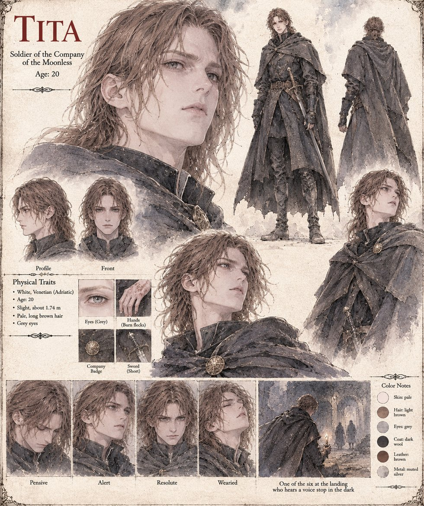

Tita
Soldier of the Company of the Moonless · glassblower out of work · one of the six sent to the landing · 20
One of the six, a pale lad called Tita who had blown glass in Torrelume until the Order’s monopoly put him out of work, now a soldier of the Company of the Moonless. Standing in the half-circle at the fence, he looks at the long row of Listeners with their small lamps and, before he can stop himself, lifts his right palm, flat, toward the nearest light, as he did every evening of his childhood and as one lifts it to the Sun. Sergeant Piovesan strikes his arm down. It is not unkind: it is the gesture of a man who has seen a good many boys killed for lifting a hand. Tita is twenty, and when Menego’s voice stops in the dark he puts the back of his hand against his mouth, thinking of his grandfather, who walked every evening for a year after the funeral to the end of his street and said a name to it. In the skiff going back Bortolo rows, and Tita sits with his hands between his knees, looking at the water.
The manuscript gives his age (twenty), his trade, his pallor and his grandfather, and no height, build, hair or eye colour. The sheet’s slight build of about 1.74 m, long light-brown hair, grey eyes, burn-flecked hands, short sword, gauntlets, long dark coat and round brass badge are its own, as are its panels Pensive, Alert, Resolute and Wearied. Its scene One of the six at the landing who hears a voice stop in the dark condenses the manuscript, which puts him at the fence; the sheet draws a hooded figure kneeling with a candle in a vaulted stone passage, which is not in the manuscript.
“a pale lad called Tita who had blown glass in Torrelume until the Order’s monopoly put him out of work”